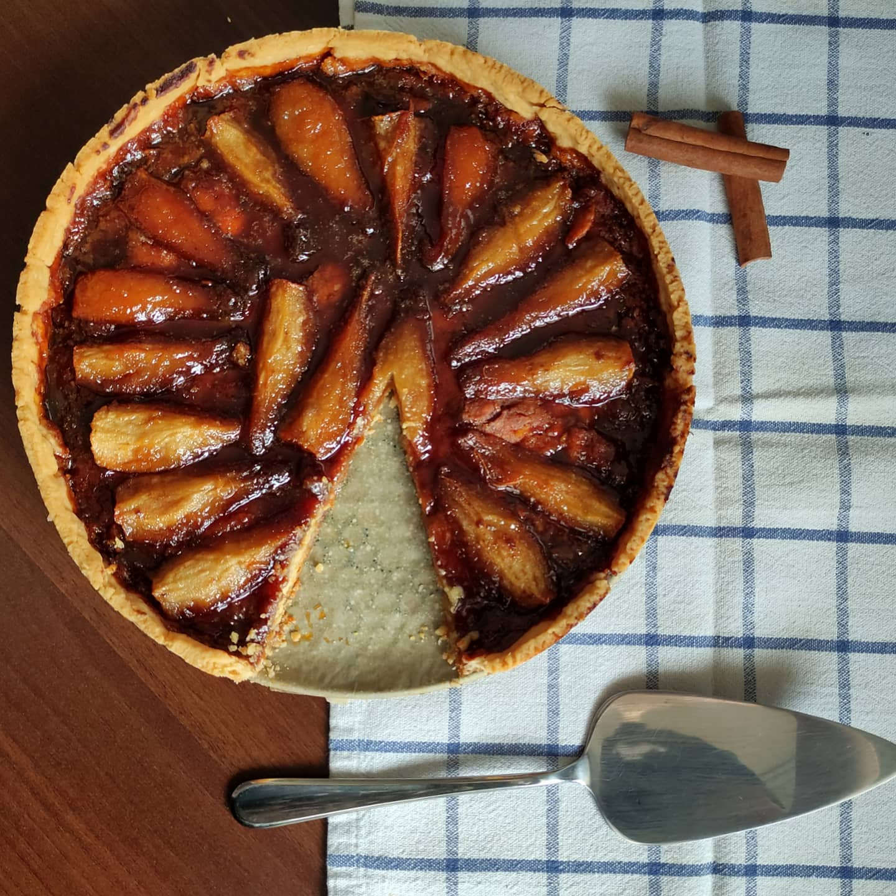

Hruškový koláč podľa @potstejnovo_peceni — Normy Jedál
Hruškový koláč s karamelem 😋
Poslední dobou nějak nestíhám, ale dnes jsem se to snažila napravit tímhle úžasným hruškovým koláčem s karamelem a skořicí. Úžasná záležitost.
#kolac #hruskovykolac #hrusky #karamel #francouzskykolac #peceni #domacipeceni #pie #pearpie #caramel #frenchpie #baking #homemadebaking #pear #potstejnovopeceni